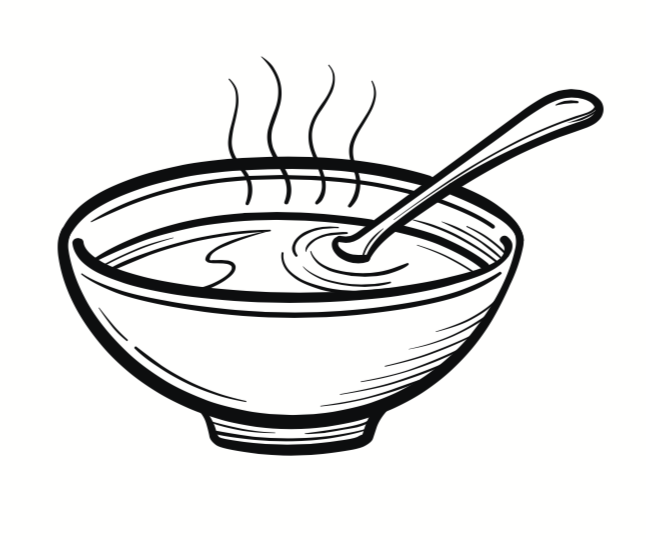

About the Site
The Name
Saba: The few grains of rice offered at the beginning of meals to the hungry ghosts.
This website is intended to be a home for posts written on the design of operating systems.
Saba: The few grains of rice offered at the beginning of meals to the hungry ghosts.
This website is intended to be a home for posts written on the design of operating systems.